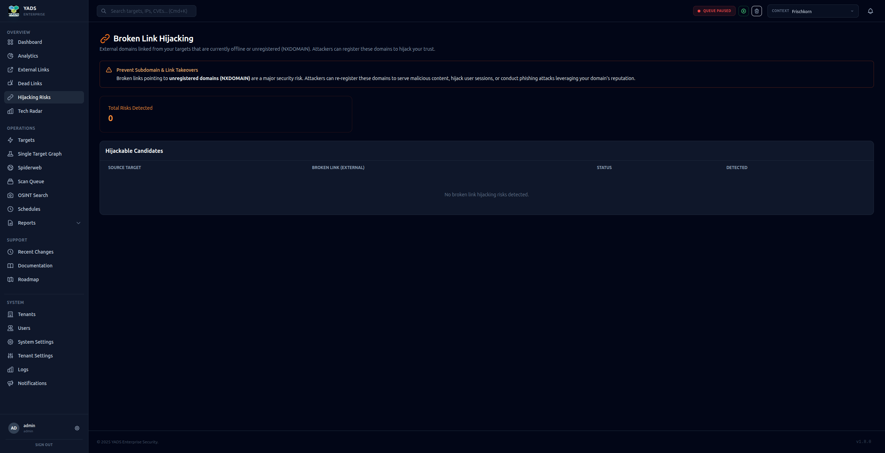

The All-in-One Reconnaissance Platform. Visualize threats, track your assets, and secure your infrastructure with cutting-edge precision.
Automatic executive summary, risk score (0–100), and prioritized recommendations — compatible with OpenAI, Anthropic, Ollama, and any OpenAI-compatible endpoint.
Download all analytics reports — PDF and Excel — in a single click as a ZIP archive. Includes infrastructure, SSL, hijacking, reputation, and more.
The Infrastructure PDF report now includes a professional cover page, table of contents, chapter introductions, and — when AI is enabled — a full management summary.
Automated discovery and cataloging of all digital assets across domains, subdomains, and cloud infrastructures.
Continuous monitoring for CVEs, misconfigurations, and exposed services with instant security scoring.
Interactive network graphs reveal relationships and attack paths that traditional lists miss.

The "Spiderweb" view mapped across all active targets.

Manage all your assets with security scores, tags, and bulk operations.

Deep insights into technology drift and infrastructure vulnerabilities.

Visualize technology distribution and detect stack drift across your infrastructure.

Visual OSINT for unauthorized brand and logo usage detection.

Professional PDF reports with cover page, table of contents, chapter intros, and one-click ZIP export for compliance audits.

Create fully customized reports with Markdown templates and 200+ dynamic variables.
AI-generated executive summary with risk score (0–100) and recommendations — powered by OpenAI, Anthropic, or Ollama.

Detection of broken external links that could be exploited for domain hijacking — with analytics card and PDF export.
Executive PDF & CSV
Full REST Integration
Automated Monitoring
Brand Asset Tracking
Real-time Alerts
Multi-Client Isolation
MITRE ATT&CK Audit Logs
Custom Templates
AI Risk Assessment
Explore more details in our Documentation.
YADS was born from a vision for comprehensive transparency. It is NOT intended to be the ultimate solution, but serves as an experiment and toolkit for exploring new ideas in Domain and Attack Surface Monitoring.